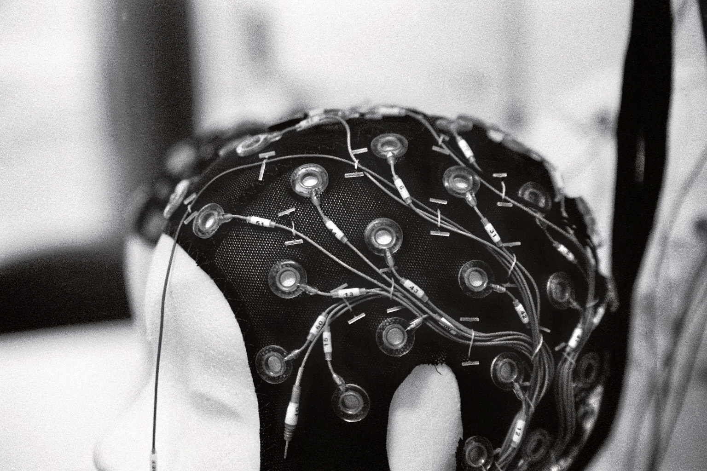

Julius Welzel
Julius Welzel · Cognitive neuroscientist
How the brain keeps us moving
I study movement and its disorders with mobile EEG, wearable sensors and open, reproducible methods, in the lab and out in the world.

I am a cognitive neuroscientist in the Neuropsychology Lab of Stefan Debener at the University of Oldenburg, and I remain closely connected to Walter Maetzler’s Neurogeriatrics group at Kiel University. My research asks how the brain controls movement, and what changes in movement disorders such as Parkinson’s disease and essential tremor.
Much of this work happens outside the classic laboratory. I record EEG while people walk, combine it with motion capture and wearable sensors, and build the tools and data standards, such as Motion-BIDS and KielMAT, that make these recordings comparable across labs. More and more, I also study the research process itself: how analysis choices and reporting shape what we find with mobile EEG, and how a research community can make its work more open.
If you are a scientist who would like to collaborate, or a student looking for a thesis project, please get in touch.
Currently
Neuropsychology Lab, University of Oldenburg · Neurogeriatrics, Kiel University
Working on
- StepuP: treadmill training in Parkinson’s disease
- META-REP: a reporting standard for mobile EEG
- Foot placement: Bayesian control of walking
- IGOR: open science in biological psychology
Elsewhere
GitHub · Google Scholar · ORCID · Mastodon
Projects
Parkinson’s disease · Mobile EEG
StepuP
A six-country trial asking why treadmill training improves walking in Parkinson’s disease, from the cortex down to the foot.
Meta-science · Mobile EEG
META-REP
Making mobile EEG replicable, with a reporting standard as the cornerstone.
Gait · Modelling
Where to put the next foot
Bayesian integration in foot placement control, with Moira van Leeuwen and the Amsterdam group.
Open science · Community
IGOR
The open-science interest group of the DGPs section Biological Psychology and Neuropsychology.
Recent publications
- van Leeuwen, A. M., Welzel, J., D’Ascanio, I., Lang, C., Vinod, V., Görrisen, P., Geritz, J., Hansen, C., Gazit, E., … (2026). Steps against the burden of Parkinson’s disease (StepuP): Protocol of a randomized controlled trial elucidating the biomechanical and neurophysiological mechanisms of a speed dependent treadmill training intervention. PLOS ONE, 21(6), Article e0348957. https://doi.org/10.1371/journal.pone.0348957 Preprint
- Contreras-Altamirano, M., Klapprott, M., Jacobsen, N., Maanen, P., Welzel, J., & Debener, S. (2026). A portable solution for simultaneous human movement and mobile EEG acquisition: Readiness potential for basketball free-throw shooting. Experimental Brain Research. https://doi.org/10.1007/s00221-026-07342-6 Preprint
- Haupt, T., Maanen, P., Daeglau, M., Contreras Altamirano, M., Stritzke, A. S., Kiene, F., Welzel, J., Blum, S., Roheger, M., & Debener, S. (2026). Enhancing mobile brain and body imaging: Open-source solutions for real-world research applications. iScience, 29. https://doi.org/10.1016/j.isci.2026.116647
- Welzel, J., … (2026). Have we solved the replicability crisis? From open practices to systemic reform in cognitive neurosciences. MetaArXiv. https://osf.io/preprints/metaarxiv/m6rng_v1 Preprint
- Vinod, V., Papin, L. J., Romijnders, R., Maetzler, W., & Welzel, J. (2026). Preprocessing on the go: Practices in gait-related mobile EEG. Psychophysiology, 63(6), Article e70352. https://doi.org/10.1111/psyp.70352